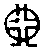

卍新纂大日本續藏經 第65冊
No.1280 闢妄救略說 (10卷)
【明 圓悟著 真啟編】
第 1 卷
崇禎三年春。漢月寄五宗原至。老僧置之不閱。復云。目原之一字。苐恐不出六祖道。成知解宗徒。不得不說破耳。此老僧逆耳之言。望漢月知非故也。至六年春。磬山寄漢月與伊書云。粵自威音無象。一○為千佛萬佛之祖。臨濟玄要。所以發明七佛歷祖之秘。以簡一橛頭。相似野狐涎。老僧亦置之。但云各與一頓。以復磬山者。亦望漢月改轍故也。既而見頂目普說。劉居士駁語。料皆漢月密囑。乃簡五宗原看。始知一○已載五宗原矣。故有三錄云云。今潭吉妄作五宗救。益見漢月密囑之禍。不得休息。老僧又豈忍坐視也。葢漢月不據自己為宗旨。直指一切人。而別尋繪事家。圖七佛之始。威音王佛。未有出載。無所考據之一○。為千佛萬佛之祖。又謂五宗各出○之一面。獨臨濟為正。於是妄認三玄三要等名目為宗旨。硬引三擊三撼之類以配之。從上相傳。佛法的的大意。豈不為漢月所混滅。且妄稱夙乘願力。如古所云。法滅仰必再來。潭吉又謂正法眼藏。湮沒既久。必有乘願力之大士。起而救之者。彼此說夢。魔魅人家兒女。今其人。雖俱已報終。老僧更恐他家別箇兒孫。仍落此窠窟。展轉相誑。以致後世學者。忘認一○而不自悟。則滅佛滅祖滅慧命之罪。自漢月始。而老僧坐視不救。則亦老僧之罪也。故不得不略撮大端。闢其妄救者。以救之耳。昔仰山作一圓相。以脚抹之。資福寶禪師。見陳操尚書來。畵一圓相。操曰。弟子與麼來。早是不著便。更畵圓相。福於中著一點。操曰。將謂是南番舶主。福乃歸方丈閉却門。此是甚麼面目。老僧惟願天下後世。以古人為榜樣。慎勿墮漢月圈套。方識達磨西來。祇為覔箇不受惑底人。亦見老僧。初不與漢月輩爭競勝負。惟為發明佛法的的大意。使人人自證自悟而已。
崇禎戊寅長至日 老僧 圓悟 書
天童和尚闢妄救略說目錄
緣起
卷之一
七佛
毗婆尸佛 尸棄佛
毗舍浮佛 拘留孫佛
拘那含牟尼佛 迦葉佛
釋迦牟尼佛
卷之二
西天祖師
一祖摩訶迦葉尊者 二祖阿難尊者
三祖商那和修尊者 四祖優波毱多尊者
五祖提多迦尊者 六祖彌遮迦尊者
七祖婆須蜜尊者 八祖佛陀難提尊者
九祖伏馱蜜多尊者 十祖脇尊者
十一祖富那夜奢尊者 十二祖馬鳴尊者
十三祖迦毗摩羅尊者 十四祖龍樹尊者
十五祖迦那提婆尊者 十六祖羅睺羅多尊者
十七祖僧伽難提尊者 十八祖伽耶舍多尊者
十九祖鳩摩羅多尊者 二十祖闍夜多尊者
二十一祖婆修盤頭尊者
二十二祖摩拏羅尊者 二十三祖鶴勒那尊者
二十四祖師子尊者
二十五祖婆舍斯多尊者
二十六祖不如蜜多尊者
二十七祖般若多羅尊者
二十八祖菩提達磨尊者
卷之三
東土祖師
初祖菩提達磨大師 二祖慧可大祖禪師
三祖僧璨鑑智禪師 四祖道信大醫禪師
五祖弘忍大滿禪師 六祖慧能大鑒禪師
卷之四
六祖下
第一世湖廣南嶽懷讓禪師
第二世江西馬祖道一禪師
第三世洪州百丈懷海禪師
第四世洪州黃檗希運禪師
卷之五
第五世鎮州臨濟義玄禪師
卷之六
第六世魏府興化存獎禪師
第七世汝州南院慧顒禪師
第八世汝州風穴延沼禪師
卷之七
第九世汝州首山省念禪師
第十世汾州太子善昭禪師
第十一世潭州石霜楚圓禪師
第十二世袁州楊岐方會禪師
第十三世舒州白雲守端禪師
第十四世蘄州五祖法演禪師
卷之八
第十五世成都昭覺克勤禪師
第十六世平江虎丘紹隆禪師
第十七世明州天童曇華禪師
第十八世明州天童咸傑禪師
第十九世夔州臥龍祖先禪師
第二十世杭州徑山師範禪師
第二十一世袁州仰山祖欽禪師
第二十二世臨安天目原妙禪師
第二十三世臨安天目明本禪師
第二十四世烏傷伏龍元長禪師
第二十五世蘇州鄧尉時蔚禪師
第二十六世蘇州鄧尉普持禪師
第二十七世杭州東明慧旵禪師
第二十八世東明海舟普慈禪師
第二十九世南京寶峰明瑄禪師
第三十世焭絕天奇本瑞禪師
第三十一世隨州關子嶺正聰禪師
第三十二世北京笑岩德寶禪師
第三十三世宜興龍池正傳禪師
卷之九
第三十四世明州天童圓悟禪師
卷之十
附三峰
天童和尚闢妄救略說目錄(終)
No. 1280
天童和尚闢妄救略說卷之一
七佛
▲毗婆尸佛
偈曰。身從無相中受生。猶如幻出諸形象。幻人心識本來無。罪福皆空無所住。
▲尸棄佛
偈曰。起諸善法本是幻。造諸惡業亦是幻。身如聚沫心如風。幻出無根無實性。
▲毗舍浮佛
偈曰。假借四大以為身。心本無生因境有。前境若無心亦無。罪福如幻起亦滅。
▲拘留孫佛
偈曰。見身無實是佛身。了心如幻是佛幻。了得身心本性空。斯人與佛何殊別。
▲拘那含牟尼佛
偈曰。佛不見身知是佛。若實有知別無佛。智者能知罪性空。坦然不怖於生死。
▲迦葉佛
偈曰。一切眾生性清淨。從本無生無可滅。即此身心是幻生。幻化之中無罪福。
師閱潭吉五宗救。闢云。從上相承法眼。所謂宗旨。我祖臨濟。初謂普化克符曰。我欲於此。建立黃檗宗旨。及乎普化問和尚三日前道甚麼。濟便打。三日後。克符問和尚前日打普化作甚麼。濟亦打。此臨濟建立宗旨。唯問著便打而已。末後謂誰知吾正法眼藏。向者瞎驢邊滅却。未甞於三聖外。別有所謂正法眼藏也。仰山雖受躭源。九十七種圓相。未聞以圓相為宗旨。而末後唯曰。一二二三子。平目復仰視。兩口一無舌。即是吾宗旨。又豈於一二二三子外。別有所謂宗旨乎。妄揑一○。為千佛萬佛之祖。而認為宗旨。自漢月始。莫說潭吉。作十卷五宗救。縱使妄作。塞滿虗空。總救不得漢月。妄揑宗旨之罪。如更不信。請看起自釋迦。終於天童。六十八人。只是一人。誰似漢月。特出異計。畵一○為宗旨者。據伊與磬山書曰。粵自威音無象。一○為千佛萬佛之祖。故七佛以雙頭獨結。四法交加。勒成無文密印。飲光傳二十八代。無非以法印心。老僧闢書云。七佛但有偈。未見有雙頭獨結。又未聞釋迦有四法交加。勒成一○。為無文密印。而飲光傳二十八代者。既四法交加。豈可謂之無文密印哉。潭吉道。闢書所論。皆所謂以辭害意者。誣旁老僧。以四法交加之辭。害無文密印之意耳。殊不知攻擊辨難。有正打。有旁敲。闢書謂七佛但有偈。未見有雙頭獨結。又未聞釋迦有四法交加。勒成一○。為無文密印。飲光傳二十八代者。如實而說。此正意也。既四法交加。豈可謂之無文密印。就其自語相違。略一點破。此旁意也。潭吉諄諄于○相統言詮。言詮入○相。比諸卦畫彖繫。正所謂以老僧辭。害老僧意者。若據老僧。那管你言詮有無。只作此一○。正是漢月根本錯處。拘留孫佛偈曰。見身無實是佛身。了心如幻是佛幻。了得身心本性空。斯人與佛何殊別。豈非明人佛無異。人外無別佛之意乎。七佛歷祖之偈。雖隱顯不同。總未有立一○。為千佛萬佛之祖者。且既謂威音無象。一○為千佛萬佛之祖。則千佛萬佛未出。又有甚麼人為漢月證此一○。為千佛萬佛之祖。無甚麼人為漢月證此一○。為千佛萬佛之祖。則是漢月自計此一○。為千佛萬佛之祖矣。非無根妄說乎。故老僧據七佛偈旨。以證漢月一○之非。潭吉乃曰。佛法無下口處。何不看龐居士。初參石頭。問曰。不與萬法為侶者。是甚麼人。頭以手掩其口。士豁然有省。異日石頭見而問曰。子見老僧後。日用事作麼生。士曰。若問日用事。即無開口處。乃呈偈以明無開口的意。曰日用事無別。唯吾自偶諧。頭頭非取捨。處處沒張乖。朱紫誰為號。丘山絕點埃。神通并妙用。運水及搬柴。古人所謂祇恐不是佛。莫愁佛不解語也。而潭吉謂佛法無下口處。借虙羲畫卦。以證漢月一○。雖無文字。備天地萬物之理。請觀龐公偈。頭頭處處。朱紫丘山。非備天地萬物之理乎。據首二句。則捨龐公。斷別無天地萬物之理。故龐公問不與萬法為侶者。是甚麼人。石頭以手掩其口。只是發明龐公而已。豈曾示一○。為龐公之祖。及公後參馬祖。亦問不與無法為侶者。是甚麼人。祖曰。待汝一口吸盡西江水。即向汝道。士於言下。頓領玄旨。有偈曰。有男不婚。有女不嫁。大家團圞頭。共說無生話。可見石頭馬祖龐公。皆據當人為玄旨。未甞以一○相為無文密印也。今潭吉自未曾悟。又何能辨悟有淺深。妄謂華藏而後。此印漸沒。然則石頭馬祖龐公。亦生於華藏之後耶。且既以虙羲畫卦。配一○相。更問潭吉。卦畫在先。虙羲在先。若卦畫在先。不得為虙羲所畫。以虙羲未有故也。若虙羲在先。豈虙羲不備天地萬物之理。而徒恃卦畫乎。卦畫不可徒恃。一○之配更無謂矣。老僧據虙羲為根株。以爻象為枝葉。正永嘉謂。直截根源佛所印。摘葉尋枝我不能。故以一棒不作一棒用。直指當人自悟者。正明人外無別物。無別理。故曰無邊剎境。自他不隔於毫端。十世古今。始終不離於當念。始契馬祖謂龐公。待汝一口吸盡西江水。即向汝道之旨。是則臨濟初住鎮州。謂普化克符曰。我欲於此建立黃檗宗旨。汝二人成褫我。二人珍重下去。已建立宗旨了也。三日後。普化却上來問。和尚三日前道甚麼。濟便打。又三日後。克符上來。問和尚前日打普化作甚麼。濟亦打。又豈普化克符外。別有宗旨可建立乎。而潭吉謂。二人稟旨上問。不唯不識普化克符。且鈍置臨濟。為不具眼矣。更謂臨濟於三段二打之後。以四料揀明之。於是便有玄要賓主炤用等。宗旨立焉。可見漢月潭吉。自迷其頭。却認他三段二打。料揀玄要賓主炤用等名相為宗旨。正是業識茫茫。豈識佛法的的大意乎。不識佛法的的大意。故惟配合名相。為三段二打之數。凡有三者。引為三玄三要根據。如三擊三撼等是也。頌百丈打破醬甕曰。擊碓傳來三甕醬。即興化拈香。亦撦為三數。遞相傳授。魔魅後昆。且三頓痛棒。漢月定謂。未聞有兩頓四頓之旨。潭吉又何得謂二打乎。即喚作棒。早已逐塊。況可認三段二打為定式。而以四料揀明之乎。南院問風穴云。汝道四料揀。料揀何法。穴云。凡語不滯凡情。即墮聖解。學者大病。先聖哀之。為施方便。如楔出楔。故僧問臨濟。如何是奪人不奪境。濟云。煦日發生鋪地錦。嬰兒埀髮白如絲。言嬰兒埀髮白如絲者。何情解之有。唯指當人本體。與無情境。等無有異。而人不惺。將謂奪人。全無人矣。僧問如何是奪境不奪人。濟曰。王令已行天下徧。將軍塞外絕煙塵。此據人奪境之意。僧問如何是人境兩俱奪。濟曰。并汾絕信。獨處一方。此言不通音信。則無他人他境。唯我獨尊。僧問如何是人境俱不奪。濟曰。王登寶殿。野老謳歌。此言王與野老。各適其適。不借不奪。各自受用也。妙喜答僧問四料揀。進云。臨濟道底。未審與和尚答底。是同是別。妙喜云。咬人屎橛。不是好狗。何況潭吉等。咬名相為宗旨乎。又謂黃檗接臨濟。不過三頓痛棒。濟乃建立若是。豈非三頓之象彖。此正潭吉睡夢未醒。要假三頓。證三玄三要。非只一畫。故以三畫之乾卦。非只一畫。證老僧一棒。為一橛頭硬禪。為執一畫以為乾。殊不思老僧明明向道。一棒不作一棒用。何甞與漢月。論一論三。不見孔子假年學易。及作繫辭。則曰。其為道也屢遷。不可為典要。何甞以卦畫為死煞法來。據此可見潭吉不知乾。葢乾之所以乾。唯當人本體而已。故易曰。君子終日乾乾。又曰。君子以自強不息。豈徒恃三畫為乾哉。圭峰曰。元亨利貞。乾之德也。常樂我淨。佛之德也。如是則即乾即佛即人。無二無別。豈不益證一○為千佛萬佛之祖。特無根妄說哉。又引漢月頌七佛偈曰。無相身心即有無。有無兩絕密交蘆。迅雷不及掩雙耳。夢斷遙空月自孤。又作此相。與所謂不可有無。有無不可者。皆如易之彖繫。所以明一○之旨。不知一○已錯。更何論所繫之辭耶。不見老僧前據仰山謂。總不出隱身三昧。以脚抹此[○@日]相。翻前隱身之案。今漢月作此相。老僧出手摘毀之。且道與仰山。同耶別耶。昔躭源舉忠國師所授九十七種圓相。轉付仰山。復上堂驗之。而仰山作女人拜。是何意旨耶。忠國師以圓相授躭源時。囑曰。南方有一沙彌。大興此教者。正為仰山看竟即燒却也。何甞以圓相為宗旨。而況如漢月畫此。以荼糊七佛偈耶。祇如夢斷遙空月自孤者。不過似趙清獻公聞雷偈。默坐公堂虗隱几。心源不動湛如水之意。至謂一聲霹靂頂門開。喚起從前自家底。則與漢月不可有無。有無不可之妄說。天地懸隔矣。葢漢月因於付法偈。鑽出四句法。故有種種之謬。所以闢書引僧問馬祖。離四句。絕百非。請師直指西來意者。正欲明西來意。無有四句法也。使西來意之外。別有四句法。安能免闢書外道之呵。乃反謂老僧依文訓義。一以無字銷之。請看世尊付法偈曰。法本法無法。無法法亦法。今付無法時。法法何曾法。是葢人人本法。本無名相。故老僧謂世尊。以無字銷名相法耳。曷甞有四法交加者乎。且引百丈曰。凡教意。皆三句相連。汝祇知三句相連。何不看下有透過三句外的。是名不墮諸數之人。汝又何知。直饒透過三句外。亦未夢見西來意在。不見藥山問雲巖曰。百丈說何法。巖曰。有時云三句外省去。六句內會取。山曰。三千里外。且喜沒交涉。今漢月執三為深密之旨。作五宗原。潭吉又執三句以破本法。作五宗救。何止三千里外沒交涉哉。至謂吾教意。如∴字三點。巖頭取為略似宗門者。又何不看巖頭曰。休休。因僧請舉。故頭云。吾教意如∴字三點。第一向東方下一點。點開諸菩薩眼。第二向西方下一點。點諸菩薩命根。第三向上方下一點。點諸菩薩頂。據點雖三。要之頂眼命根。即一菩薩身分而已。故下云。但明取綱宗。本無實法。若道向上有法有事。真椀鳴聲。荼糊汝。繫罩汝。古人喚作繫驢橛。若將實法與人。土亦消不得。況漢月潭吉。分別種種圓相。種種三法。以為佛祖法式。是誠妄作妄說。害滅宗旨。故老僧不得不痛為之闢。將從上關棙。逐一說破。誠得罪於佛祖。必取後世明眼者罵。但時不獲免耳。
▲釋迦牟尼佛
姓剎利。父淨飯王。母摩耶。剎利氏自天地更始。閻浮洲初闢已來。世為王。佛歷劫修行。值然燈佛授記。於此劫作佛。後於迦葉佛世。以菩薩成道。上生覩史陀天。名護明大士。及應運時至。乃降神于摩耶。當此土周昭王二十四年甲寅四月初八日。自摩耶右脇誕生。生時放大智光明。照十方世界。地湧金蓮花。自然捧雙足。一手指天。一手指地。周行七步。目顧四方曰。天上天下惟我獨尊。
五宗救。載世尊初生時。一手指天。一手指地。周行七步。目顧四方曰。天上天下。惟我獨尊。雲門云。我當時若見。一棒打殺與狗子喫。貴圖天下太平。雲峰悅云。雲門雖有定亂之謀。且無出身之路。老僧道。此雲峰據身為世尊惟我獨尊之旨。恐人錯會雲門語。不識一棒打殺。與狗子喫。貴圖天下太平者。乃直指人人獨尊時節。故下此二語。與世尊雲門相見。所謂棒下有分身之意。亦有出身之路者。此也。老僧曾頌曰。纔出胞胎脫體彰。指天指地為人揚。引他無限癡男女。天上人間沒處藏。豈像汝等。贓誣世尊。俛仰團成五色毬。萬鈞香餌墜絲頭。瞿曇意在深深處。跛鱉盲龜漫上鈎耶。世尊明明道。天上天下。惟我獨尊。何曾有五色毬。萬鈞餌。與深深意來。且問潭吉。雲門是箇有名的跛足阿師。因甚却道。一棒打殺。與狗子喫。貴圖天下太平。汝反敢謂跛鱉盲龜漫上鈎耶。汝何知到盲龜田地。不見有佛身與己身之異。始稱臨濟道。誰知吾正法眼藏。向者瞎驢邊滅却。則跛鱉盲龜。又豈在正法眼藏外耶。救中道。四十九年說法。皆隨機遮護。老僧則謂隨機開導。故曰。更以異方便。助顯第一義。可見異方便。無非開顯第一義者。所謂諸佛世尊。唯為一大事因緣故。出現於世。若也隨機遮護。不顯示第一義。則世尊直至拈花時。迦葉破顏微笑。乃出現於世耶。至謂一花拈出。圓證吾人心法廣大。說箇廣大。已是限量了也。吾人本來面目。徧現俱該沙界。收攝在一微塵。又極小同大。忘絕境界。極大同小。不見邊表。豈有廣大可說耶。漢月認一花拈出。早已錯了。何不看老僧頌曰。世尊脫體風流。迦葉渾身賣俏。當時百萬人天。只見拈花微笑。誠前人所謂。有抽釘拔楔之意。豈似汝等。釘樁搖櫓。道箇圓證廣大。為贓誣世尊之臆談也。且靈山會上。拈花示眾。獨有金色頭陀。破顏微笑。世尊云。吾有正法眼藏。涅槃妙心。實相無相。付囑摩訶迦葉。維摩詰曰。觀身實相。觀佛亦然。拘留孫佛曰。見身無實是佛身。足知世尊。所謂實相無相。身外無餘。何有一花拈出。圓證心法廣大者哉。又謂闢書。以一棒為全提獨尊。此外別有。即同魔說。老僧一棒不作一棒用。直指人人本體。為全提獨尊。正顯本體外別有。即同魔說耳。如世尊謂。身含十方。無盡虗空。豈於身外別有一棒哉。至云。吾所謂獨尊者。如天子為萬國之獨尊。吾所謂全提者。如萬國皆在天子王化之中。布一令而天下肅。發一言而天下應。除一官。授一職。而天下被其澤。天下之教教化化皆歸之。故謂之獨尊。據潭吉此說。鼓惑世人。生貪妄想。害獨尊之正旨矣。又曰。非天下之外。別有獨尊。獨尊之外。別有天下。此潭吉未到舉頭天外看。誰是我般人。故謂非天下之外。別有獨尊耳。抑知身含十方無盡虗空乎。又謂洞宗有五位。以君位為尊。潭吉何不看洞山謂。正中來。無中有路出塵埃。但能不觸當今諱。也勝前朝斷舌才。既曰無中有路出塵埃。豈似汝天下皆歸之為獨尊。與天下之外無獨尊乎。洞山又曰。直饒頭頭上顯。物物上彰。此正漢月意中。謂一花拈出。則物物頭頭皆然。故曰。圓證吾人心法廣大者。洞山何故謂。祇喚作了事人。終不喚作尊貴。當知尊貴一路自別乎。據是則豈可以漢月所謂心法廣大。為洞宗君位為尊乎。又謂臨濟有四賓主。以主中主為貴。若到老僧前恁麼道。則喫棒未有了日在。何故聻。為潭吉不過學說主中主為貴。其實賓中主之意。尚未夢見。況主中主乎。又謂雲門有全提半提。以全提為究竟。到老僧前恁麼道。亦直棒打出。汝何不看雲門云。直得乾坤大地。無纖毫過患。此又漢月一花拈出。圓證心法廣大的意也。而雲門則謂祇是轉句。不見一色。尚謂始是半提。更須知有全提時節。漢月潭吉。因不知時節。故一味穿鑿。亂統惑人。反引教中。海印三昧。謂萬象森羅。皆在海光之中。一時俱現。所謂全提獨尊。且海印三昧。出華嚴經。未有謂為全提獨尊者。豈非漢月潭吉。俱臆談乎。據老僧則祇可謂海與萬象。一時互映俱現。不可謂全提獨尊。何則。海與萬象。無能映所映。古人謂雁過長空。影沉寒水。雁無遺踪之意。水無留影之心者此耳。潭吉引來。證漢月心法廣大。抹滅世尊。身含十方無盡虗空。唯我獨尊之旨。不見道。未離兜率。已降皇宮。未出母胎。度人已畢。豈如來外。別有海印三昧。待拈花一著。始盡天上天下。獨尊之旨者乎。老僧一棒不作一棒用。直指一切人。為全提獨尊者。乃人人獨尊之獨尊。同一虗空天地日月。人人各各。見一虗空天地日月。未有一人。而不圓滿一虗空天地日月。豈止萬國之人而已。乃至盡虗空。徧法界。一一圓滿。一一獨尊。初無彼此。絲毫增減。故謂是法平等。無有高下。豈待天下皆歸之。始為獨尊哉。若待天下皆歸。始為獨尊。則人人一一。何有獨尊之時哉。故老僧一棒不作一棒用者。即古所謂。以丈六金身。作一莖草用。一莖草。作丈六金身用。體用一致。殺活自繇。實非漢月潭吉輩所知。又何怪其妄認一棒。為孤獨之獨也耶。
自降生後。種種神異。踰城出家。具如經說。始于阿藍迦藍處。三年學不用處定。知非。便捨。復至鬱頭藍弗處。三年學非非想定。知非。亦捨。又至象頭山。同諸外道。日食麻麥。經于六年。世尊自思曰。今此苦行。非正解脫。吾當受食。而後成佛。即沐浴于尼連河。天為之偃樹。世尊援之而出。受牧牛氏女所獻乳糜。尋詣畢鉢樹下。天帝化人。擷瑞草以藉坐。景雲祥風。四起紛披。天魔念。世尊道成。且受折抑。率眾作難。窮現可怖可欲諸境。世尊泊然不動。以指按地。地大震。魔皆顛仆。於是降之。故經云。以無心意無受行。而悉摧伏諸外道。先歷示邪法。示諸方便。發諸異見。令至菩提。乃於穆王三年癸未歲二月七日之夕。入正三昧。至八日明星出時。廓然大悟。成等正覺。乃歎曰。奇哉一切眾生。具有如來智慧德相。但以妄想執著。不能證得。時年三十矣。成道後六年。歸為淨飯王說法。王大喜。遣其族五百貴子。從之出家。
世尊在靈山會上。拈花示眾。是時眾皆默然。唯迦葉尊者破顏微笑。世尊曰。吾有正法眼藏涅槃妙心。實相無相微妙法門。不立文字。教外別傳。付囑摩訶迦葉。
救曰。拈花付法。實直指一宗之岷源也。此處錯會。則千差萬別。繇之而生。不流為心性自己之義路。便流為硬作主宰之儱侗。如五方天王。觀摩尼寶珠。各說異色。而真珠隱矣。此正漢月潭吉。蹉過世尊。錯會拈花為付法。千差萬別。繇之而生。故漢月流為心法廣大之義路。潭吉則訶自己為義路。漢月謗老僧。為一橛頭硬禪。潭吉亦謗老僧。為硬作主宰之儱侗。豈非若天王觀珠。各說異色。而擡手之真珠則隱耶。據世尊不以摩尼為真珠。證知斷不以拈花為付法。自謂擡手為真珠。則離世尊外豈別有珠。故老僧獨據世尊。為付法之宗。以證老僧。唯直指人人為宗旨也。救中乃引一句合頭語。萬劫繫驢橛。以證闢書。自謂情與無情。煥然等現。為末後句。正在船子訶禁中。此見潭吉。不懂船子語意。故作此妄配也。據船子纔見夾山。劈頭便問大德住何寺。此船子所謂絲懸綠水。浮定有無之意。以驗夾山。而夾山不惺。故隨語生解。答曰。寺即不住。住即不似。船子亦就追索曰。不似似箇甚麼。而夾山猶自不知。又隨語曰。不是目前法。船子見夾山。是箇學語之流。故曰甚處學得來。夾山又隨語曰。非耳目之所到。船子見夾山。重重隨語生解。故點曰。一句合頭語。萬劫繫驢橛耳。老僧自悟情與無情。煥然等現。與誰相答問來。可謂之合頭語。繫驢橛乎。又謂老僧解拈花公案。威音者。一切眾生之容威。舉目了然。為依法生解。此據漢月五宗原。謂甞見繪事家。圖七佛之始。始於威音王佛。唯大作一○。威者。形之外者也。音者。聲之外者也。威音王者。形聲之外。未有出載。無所考據。文字已前最上事也。老僧謂漢月。本分未徹。故不見威音王佛。何以故。威音者。即三世諸佛。一切含靈之本色。舉目了然。不假思議言詮。正古所謂須知情與無情。說法無異者耳。所以世尊於靈山會上。拈花默顧大眾。人天百萬。悉皆罔措。唯摩訶迦葉。破顏微笑。世尊不說說。迦葉不聞聞。豈非威音也乎。即如世尊。示隨色摩尼珠。問五方天王。此珠作何色。時五方天王。互說異色。世尊藏珠。復擡手曰。此珠作何色。天王曰。佛手無珠。何處有色。世尊曰。汝何迷倒之甚。吾將世珠示之。便各強說。有青黃赤白色。吾將真珠示之。便總不知。時五方天王。悉皆悟道。可見世尊擡手。無物色之色。正吾宗門中。謂之本色衲子。老僧前謂漢月。本分未徹。故不見威音王佛者此也。若人因默顧默契。如五方天王。覩世尊手為真珠。亦能悉自悟道。既已自悟。寧有妄作一○。謂千佛萬佛之祖者乎。巖頭曰。若道向上有法有事。荼糊汝。繫罩汝。古人喚作繫驢橛。若有實法與人。土亦消不得。是則漢月一○。縱與仰山所畫○相無異。也是荼糊人。繫罩人。也是繫驢橛。故仰山即以脚抹之。而況漢月妄作一○。謂千佛萬佛之祖。老僧安得不訶禁乎。潭吉又引首楞嚴。爾時阿難。及諸大眾。各各自知。心徧十方。反觀父母。所生之身。如一微塵。若存若亡。如湛巨海。流一浮漚。起滅無從。各各自知。獲本妙心。常住不滅。謂此方等會中所談。教外之旨。不若是者。竟不思汝前自引。海印三昧。謂萬象森羅。皆在海光中。一時俱現。為全提獨尊。以證漢月之心法廣大。正與各各自知。心徧十方。反觀父母所生之身。如一微塵同解。繇此看來。潭吉自未悟。而惟依漢月心法為悟。漢月自未悟。而惟依大作一○為悟。正所謂依法生解。猶落魔界。老僧自悟。與盡虗空徧法界之有身。無不徧現。何曾身如微塵。若存若亡。別有心徧十方來。可見漢月潭吉。罔措老僧自悟境界。故謂同雲門。乾坤大地。無纖毫過患。猶是轉句也。又何知雲門為未大悟者。指自境而反諸己。故謂乾坤大地。無纖毫過患。祇是轉句。正漢月所謂心法廣大。及潭吉謂萬象森羅。皆在海光中。一時俱現之意也。不見一色。始是半提。更須知有全提時節。此正雲門預說著漢月潭吉等。不知有全提時節的病根。潭吉引。海印三昧。擬證雲門全提為究竟。以漢月心法廣大。為全提時節者。正反雲門全提之旨也。古人道。如金翅擘海。直取龍吞。如單刀直入。取上將頭。是教外單傳獨拔。提持四生之意。故老僧唯據一棒不作一棒用。凡有問者。當頭便打。乃是全提時節。正古云。欲識佛性義。當觀時節因緣。時節若至。如迷忽悟。如忘忽憶。今潭吉不知時節。據海印三昧。及漢月證法廣大。以證雲門全提。而妄謂老僧覿面提人。為一橛頭硬禪。及硬作主宰之儱侗。何曾夢見老僧情與無情。煥然等現。正平等真法界。無佛無眾生。一身入多身。多身入一身。盡虗空。徧法界。凡有身者。各各身光。互相涉入。映徹交羅。如寶珠網。豈可以算數譬喻。能測度哉。而反謗為閨閣中物。欲以唐突佛祖。向上巴鼻。太早計者。何也。其向上巴鼻話。今時人。十箇有五雙。皆學說耳。故潭吉前訶自己為義路。亦因雲門謂得到法身邊。己見猶存。坐在法身邊。是一。竟不省他後語。放過即不可。但有甚麼氣息。亦是病故也。妙喜曾曰。不用作禪會。不用作道會。不用向上商量。此是雲門老漢。據實而論。我恁麼道。有沒量罪過。汝若簡點得出。許你具擇法眼。若簡點不出。且向雲門葛藤裏參。老僧道。者便是大慧。見人不會雲門意。教人向雲門葛藤裏參耳。又恐不會。故曰。而今學實法者。以透過法身為極致。而雲門反以為病。不知透過了。合作麼生。到者裏。如人飲水。冷煖自知。不著問別人。問別人則禍事也。據冷煖自知。又非己見乎。老僧恁麼道。亦有沒量罪過。一任漢月潭吉等。諸方簡點。且閨閣中物。藥山因李翱居士問。如何是戒定慧。山曰。貧道者裏。無此閒家具。李罔測玄旨。故曰。太守欲保任此事。須向高高山頂立。深深海底行。閨閣中物捨不得。便為滲漏。此藥山點李居士。捨不得戒定慧等。為閨閣中物耳。據高高山頂立。深深海底行。豈出得老僧情與無情。煥然等現乎。又芙蓉楷。拈提船子夾山因緣云。法身者。理妙言玄。頓超終始之患。諸仁者。莫是幻身外別有法身麼。莫是幻身便是法身麼。若也恁麼會去。盡是依他作解。矇昧兩岐。法眼未得通明。不見僧問夾山。如何是法身。曰法身無相。如何是法眼。曰法眼無瑕。所以道吾云。未有師在。忽有人問老僧。如何是法身。羊便乾處臥。如何是法眼。驢便濕處尿。更有人問。作麼生是法身。買帽相頭。作麼生是法眼。坑坎堆阜。據芙蓉四轉語。又何甞出得老僧。情與無情。煥然等現乎。又云。若簡點將來。夾山祇是學處不明。如流俗閨閣中物。此芙蓉簡點夾山。不能捨法身法眼。無相無瑕。致使情封識鎻。如流俗閨閣中物。然尚不簡夾山。祇學說得法身無相。法眼無瑕。而自未甞實證實契。法身法眼。故直待船子點破耳。芙蓉又賣弄曰。老僧若不當陽顯示。後學難以知歸。勸汝諸人。不用求真。唯須息見。諸見若息。智鑑洞明。更無他物。諸仁者。還會麼。良久曰。珠中有火君須信。休向天邊問太陽。老僧若見芙蓉恁麼道。便與當頭一棒。何故。免芙蓉別說箇珠中有火。荼糊人。即如不用求真。唯須息見等語。其成人壞人亦不淺。所以老僧不甚言之。但人問法身。也與當頭一棒。問法眼。也與當頭一棒。問法身向上。也與當頭一棒。學人於此。若生異見。總不干老僧事。一任漢月潭吉。道一橛頭硬禪。相似野狐涎。硬作主宰之儱侗。也不干老僧事。若到老僧前來恁麼道。則與當頭一棒。斷治你等。諸見盡淨。始不敢如此。妄作妄說耳。又洪覺範曰。於今叢林。師授弟子。例皆禁絕悟解。推去玄妙。惟要直問直答。無則始終言無。有則始終言有。毫釐差互。謂之狂解。使船子聞之。豈止萬劫繫驢橛而已哉。繇此觀之。非特不善悟。要亦不善疑也。善疑者。必思三十三祖授法之際。悟道之緣。其語言具在。皆可以理究。可以智知。獨江西石頭而下。諸大宗師。以機用應物。觀其問答。溟涬然令人坐睡。其道異諸祖耶。則嗣其法。其不異耶。則所言乃爾不同。故知臨濟大師曰。大凡舉論宗乘。一句中具三玄。一玄中具三要。有玄有要者。葢明此也。不知者。指為門庭建立。權時語言。可悲也。今漢月等。認三玄三要之名。為實法者。葢倚覺範言而忽臨濟語也。何也。臨濟但曰。有權有實。有炤有用而已。漢月等。竟不顧其語脉。執定有玄有要。非倚覺範之言而何耶。諸人要會一句中具三玄。一玄中具三要。但看夾山問船子。拋綸擲釣。師意如何。子曰。絲懸綠水。浮定有無之意。山默領曰。語帶玄而無路。舌頭譚而不譚者是也。故船子曰。釣盡江波。金鱗始遇。山乃掩耳。子曰。如是如是。遂囑曰。汝向去。直須藏身處沒踪跡。沒踪跡處莫藏身。吾三十年在藥山。祇明斯事。若認覺範的有玄有要為實法。又何止萬劫繫驢橛而已。
世尊至多子塔前。命摩訶迦葉。分座令坐。以僧伽黎圍之。遂告曰。吾以正法眼藏。密付於汝。汝當護持。并敕阿難。副貳傳化。毋令斷絕。而說偈曰。法本法無法。無法法亦法。今付無法時。法法何曾法。爾時世尊。說此偈已。復告迦葉。吾將金縷僧伽黎。傳付於汝。轉授補處。至慈氏佛出世。勿令朽壞。迦葉聞偈。頭面禮足曰。善哉善哉。我當依敕。恭順佛故。
救曰。六祖入黃梅之室。亦以袈裟遮圍。徵其前悟。至應無所住。而生其心。言下大徹。遂以衣鉢付之。先師謂袈袈縷縷。明示法數。非苟然也。葢袈裟自一條至二十五條。每條各五。各各四長一短。顛倒參錯。開闔變化。默印吾人本具之廣大心體。圓融行布。不滯一偏。始盡此心此法之奧。非心外別有所謂密付者也。如六祖偈曰。菩提本無樹。明鏡亦非臺。本來無一物。何處惹塵埃。豈非滯在淨處。而於心法有所未圓者乎。若此偈便為究竟。則三鼓入室。不應復有言下大徹等語。既有此語。則偈旨之偏。雖盧公再出。亦當首肯。今人悟不及此。遂謂先師以宗旨定在衣上。不亦欺世之甚乎。此正顯潭吉不肯深思。脫空妄語。不思袈裟繇人所造。以所造之衣。印本具心體。則所造與本具。互相敵破。法喻不齊也。且前既據衣縷。為示法數。謂非苟然。後又曰。宗旨不在衣上。豈非前後不炤。自相矯亂乎。漢月誣謗六祖之偈。謂斷見外道。潭吉改為滯在淨處。於心法未圓。然則世尊之法本法無法。無法法亦法。今付無法時。法法何曾法。亦滯在淨處。而於心法有所未圓乎。又迦葉偈曰。法法本來法。無法無非法。何於一法中。有法有非法。既謂法法本來法。無法無非法。豈非本來無一物。何處惹塵埃乎。漢月潭吉。自未悟本來。故一味向本來外。說此心此法之奧。反斥六祖本來偈。為滯在淨處。未夢見古人處處真。處處真。塵塵盡是本來人耳。龐居士所謂。日用事無別。唯吾自偶諧。頭頭非取捨。處處沒張乖。朱紫誰為號。丘山絕點埃者。者便是六祖本來無一物。何處惹塵埃的註脚。故老僧不待盧公再出。輙斷漢月潭吉。未到佛祖。與一切人。本來無異之地。所以妄作五宗原。五宗救。即據潭吉。謂物之最大者。天地是也。理之最幽者。陰陽是也。聖人迎日推策。畫八封。考河圖。測以渾天之儀。載以曆象之書。然後天地之動靜。日月之行度。星辰之區分。陰陽寒暑之數。閏餘盈縮之變。鬼神幽冥之情狀。灼見而指諸掌。繇是而觀聖人之智慮。過人遠矣。使匹夫匹婦。從而論之。又烏得不增其昧昧。便可見汝。未證到本來一切無異之地。何以故。天地自我出。不可謂物之最大。陰陽繇我彰。不可謂理之最幽。不著一畫。而八卦自陳。未見龍馬。而河圖已出。不待測以渾天之儀。載以曆象之書。而天地之動靜。日月之行度。星辰之區分。陰陽寒暑之數。閏餘盈縮之變。鬼神幽冥之情狀。無不各循其候。各得其所。然則聖人之智慮。何甞有纖毫過人。匹夫匹婦。何甞有纖毫昧昧哉。此是老樵夫。自覺情與無情。煥然等現的境界。世尊據此。謂諸佛出世。惟為一大事因緣。七佛歷祖五宗。據此為相續不斷底宗旨。今潭吉大視天地。幽視陰陽。把迎日推策。測以渾儀。載以曆書。與畫八卦。考河圖。看做聖人奇特的事。如此則正是業識茫茫。無本可據。又何怪其依漢月。妄作妄說。誣謗老僧耶。
天童和尚闢妄救略說卷之一